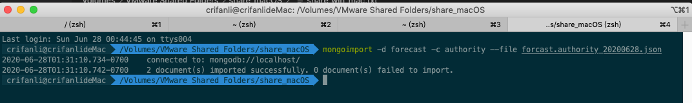
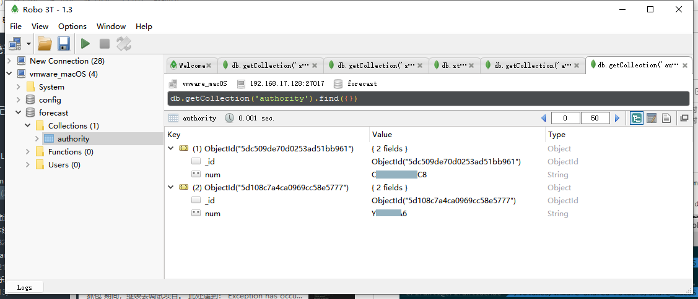

mongoexport和mongoimport
基本语法：
mongoimport -d database_name -c collection_name --file exported_mongodb_collection_file.json
举例
把csv导入某个database的某个collection
mongoimport --db chandashi --collection manual --type csv --headerline --ignoreBlanks --file ./manual.csv
- 参数解释
--headerline：csv的第一行是header头
导出数据库evaluation的集合question
mongoimport -d evaluation -c question --file questions_181219_2.json
导出和恢复authority
背景：
Mac中MongoDB中有如下数据：

然后去导出：
单个database数据库forecast中某个特定的collection集合authority的数据
mongoexport -d forecast -c authority -o forcast.authority_20200628.json
具体log：
limao@xxx ~/Downloads/mongo_data mongoexport -d forecast -c authority -o forcast.authority_20200628.json
2020-06-28T16:26:15.600+0800 connected to: mongodb://localhost/
2020-06-28T16:26:15.614+0800 exported 2 records
limao@xxx ~/Downloads/mongo_data ll
total 8
-rw-r--r-- 1 limao CORP\Domain Users 126B 6 28 16:26 forcast.authority_20200628.json
然后把此json文件弄到Win中VMWare中的macOS之后，再去恢复：
mongoimport -d forecast -c authority --file forcast.authority_20200628.json
具体log：
crifanli@crifanlideMac /Volumes/VMware Shared Folders/share_macOS mongoimport -d forecast -c authority --file forcast.authority_20200628.json
2020-06-28T01:31:10.734-0700 connected to: mongodb://localhost/
2020-06-28T01:31:10.742-0700 2 document(s) imported successfully. 0 document(s) failed to import.

Win中（能连接到macOS中MongoDB的）mongo的GUI客户端Robot 3T中，刷新后即可看到导入的数据：
